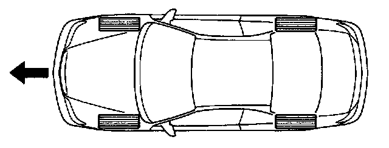
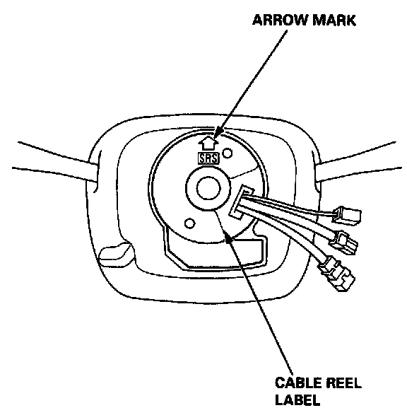

Steering Wheel and Cable Reel Alignment
Steering Wheel and Cable Reel Alignment
NOTE: To avoid misalignment of the steering wheel or airbag on reassembly, make sure the wheels are turned straight ahead before removing the steering wheel.

Rotate the cable reel clockwise unit it stops.
Then rotate it counterclockwise (approximately two and a half turns) until the arrow mark on the cable reel label points straight up.